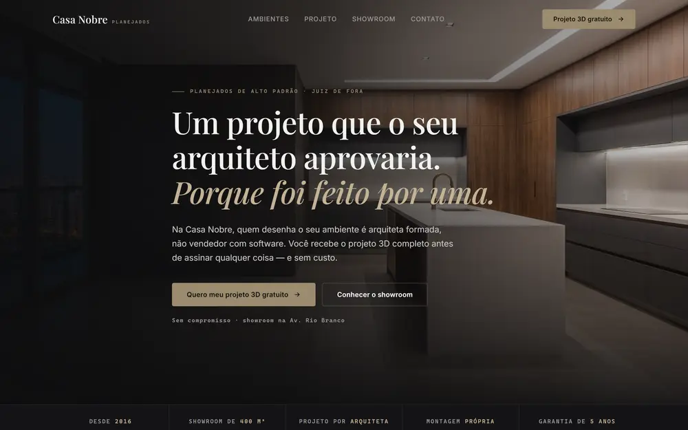
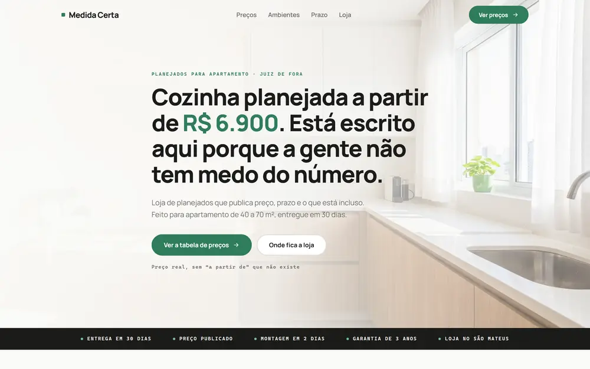
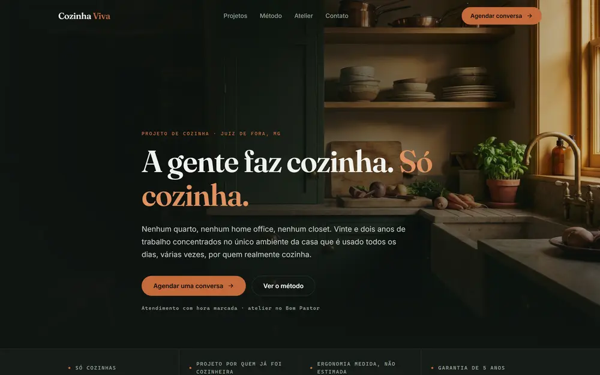
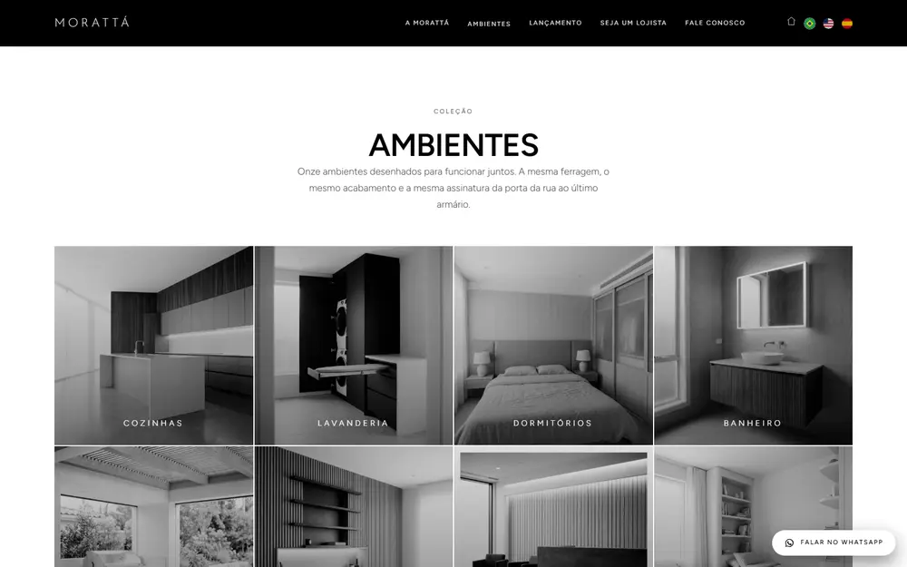

◆portfólio
Cinco mercados, dezesseis sites. Role e abra qualquer um.
Cada esteira abaixo é um mercado que eu atendo. Os sites rodam de verdade, não são figuras: clique em qualquer cartão para abrir a página inteira, do topo ao rodapé. Passe o mouse para parar a esteira.
Móveis planejados
seis demonstrações · marcas fictícias
atelieverga.com.br
 Ateliê VergaMarcenaria autoral
casanobreplanejados.com.br
Ateliê VergaMarcenaria autoral
casanobreplanejados.com.br
 CERNEMarcenaria arquitetônica
morattaplanejados.com.br
CERNEMarcenaria arquitetônica
morattaplanejados.com.br
Ateliê VergaMarcenaria autoral
casanobreplanejados.com.br

Casa NobreAlto padrão medidacerta.com.br
Medida CertaPreço publicado cozinhaviva.com.br
Cozinha VivaSó cozinha cernemarcenaria.com.br
CERNEMarcenaria arquitetônica
morattaplanejados.com.br

MorattáIndústria + rede de lojistas